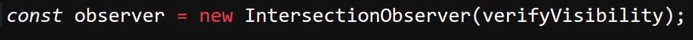
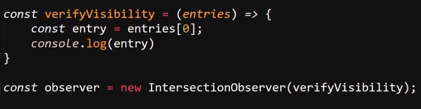
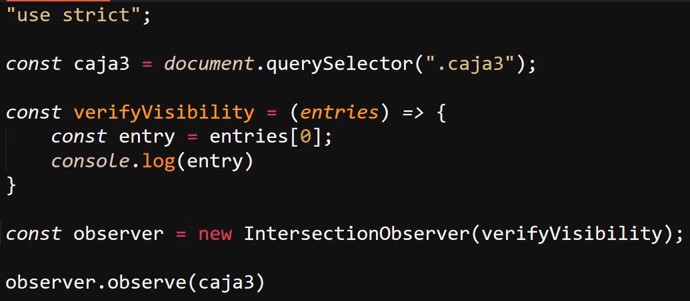
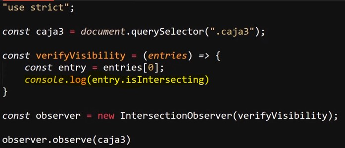

La función de esta API es simple: esta detecta si un elemento HTML se encuentra dentro del viewport del navegador o no. En otras palabras, esta API detecta si el elemento HTML en cuestión se encuentra enfocado dentro de la pantalla del navegador.
Esta API trabaja a través del objeto "IntersectionObserver", el cual se declara como un objeto común.
Ejemplo

Una característica del objeto "IntersectionObserver" radica en que este debe recibir de forma obligatoria un dato, el cual hace referencia a una función que define qué acción se tomará cuando el elemento entre en el viewport.
Ejemplo

En este ejemplo, el dato "verifyVisibility" hace referencia a una función flecha a la cual se le asigna el parámetro "entries" (entradas). Este dato puede ser nombrado como se desee, pero lo que sí es de carácter obligatorio es definir un parámetro en esta función flecha, ya que en este se asignará un array el cual contendrá el listado de todos los elementos HTML a los que se les defina el seguimiento con la API.
Por lo tanto, una ejecución muy simple de la API estaría conformada de la siguiente forma:
Ejemplo

En este ejemplo se obtiene el elemento HTML en cuestión (caja3), se declara la variable "verifyVisibility", la cual contiene la función flecha que a su vez recibe el parámetro "entries". En este caso, la función define el dato entries como un array y define la variable "entry" para obtener el primer dato de este (lugar en el que se almacenará el primer elemento a hacer seguimiento). Luego se inicializa el objeto "IntersectionObserver" en la variable "observer" y se le asigna la función flecha; por último, se asigna el objeto para que haga seguimiento del elemento HTML.
En otras palabras, se obtiene el elemento HTML al que se le hará seguimiento, se declara la función flecha la cual obtiene un dato, lo almacena en un array y obtiene el primer dato para imprimirlo en pantalla. Luego se inicializa la API con "IntersectionObserver" y se le pasa la función flecha. De ese modo se envía el elemento HTML a la función y, cuando dicho elemento entre en el viewport, se ejecuta el código de la función flecha.
Por otra parte, se puede hacer retornar un valor booleano que indique si un elemento se encuentra en pantalla o no; esto se logra con la propiedad ".isIntersecting". De este modo, la propiedad retornará "false" en caso de que el elemento no se encuentre en pantalla y retornará "true" en caso de que sí lo esté.
Ejemplo

Con esa pequeña modificación, el ejemplo anterior pasa de imprimir el objeto "IntersectionObserverEntry" para, en su lugar, retornar "true" o "false" según si el elemento se encuentra en el viewport o no.
Options
Se trata de un segundo parámetro que puede ser definido en el objeto "IntersectionObserver". Es un dato que contiene un objeto en el cual se definen ciertas pautas para la ejecución del evento; principalmente, estas pautas consisten en definir si el evento se ejecutará antes o después de lo definido por defecto.
Es decir, se puede usar "options" para definir que el evento ocurra 50px antes de que el elemento se muestre o, por otro lado, que este no ocurra hasta que la mitad del elemento se encuentre dentro del viewport.
Lazy Load
Se trata de un ejemplo de uso de la API "Intersection Observer", el cual consiste en desarrollar un sistema de carga para definir cuántos o cuáles elementos cargar a la vez. Este tipo de sistema es empleado en redes sociales como Facebook o Instagram, ya que este tipo de plataformas están estructuradas como un muro en el cual se van cargando publicaciones según el usuario se desplaza por la página.
En otras palabras, estas redes sociales se basan en el desplazamiento de los usuarios por el viewport para definir cuándo cargar más elementos en vez de cargarlos todos a la vez.